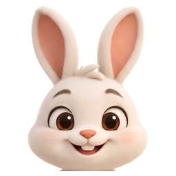

iPhone'un zamanlayıcısıyla aynı düzen: solda duraklat ve bitir, sağda aşama ve akan sayı, altta ince çubuk. Sayı sistemin kendi sayacıyla akıyor; uygulama arka planda uyurken de doğru kalıyor.
Düğmeler gerçek: önizlemede duraklat/devam et çalışıyor. Kilit ekranında basınca uygulama açılmadan tur duruyor, kalkan (Ekran Süresi) kalkıyor, bitiş zili geri alınıyor.
Duraklatınca kart kalkmıyor, donuyor. Süre dolunca başlık "Süre doldu" oluyor ve yalnızca bitir düğmesi kalıyor.

18:42Üstte küçük hâli (maskot + sayı), altta basılı tutunca açılan hâli. iOS 16'da (düğmesiz Live Activity) düğmelerin yerinde maskot duruyor.